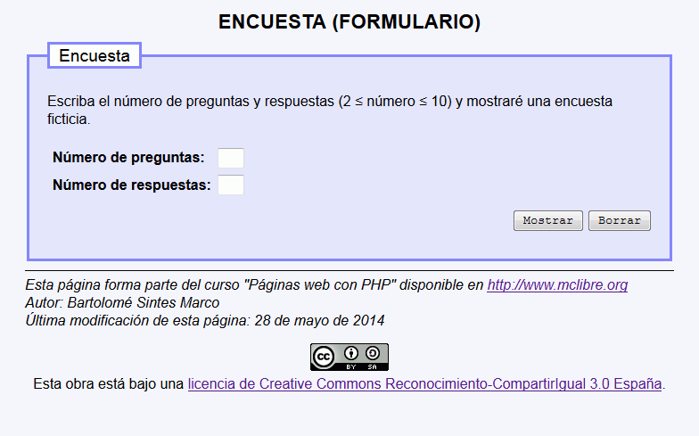
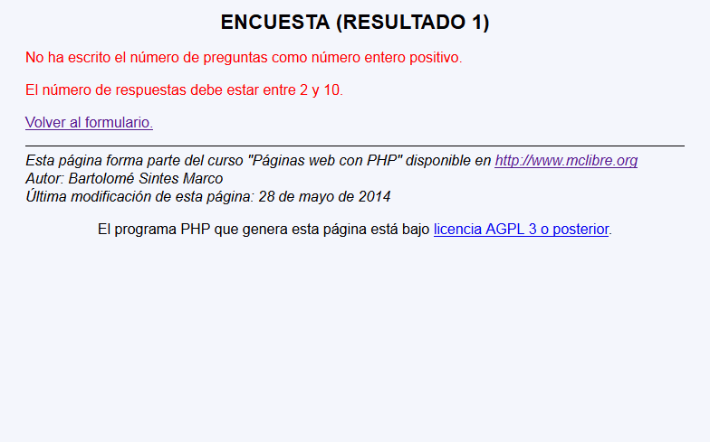
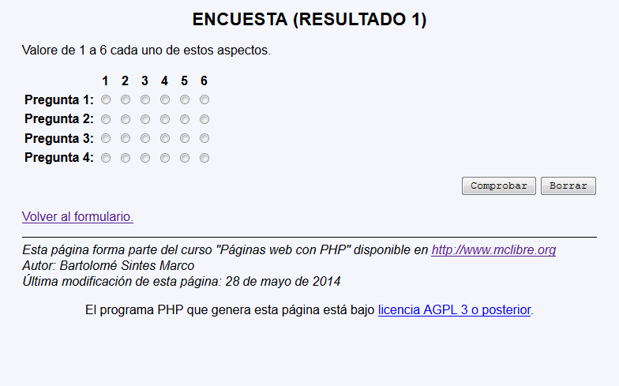

En este ejercicio se debe crear un programa que permita mostrar una encuesta (aunque el programa no procesará las respuestas):
Encuesta - Comentarios
El programa tendrá dos páginas:
La primera página pide el número preguntas y respuestas (entre 2 y 10):

La segunda página comprueba primero el valor recibido:

En el caso de que el valor sea correcto, la segunda página muestra la encuesta utilizando botones radio:

Aunque el programa se termina aquí, los nombres de los controles botones radio y los controles ocultos deben ser correctos, de manera que pudieran ser procesados por una página posterior.